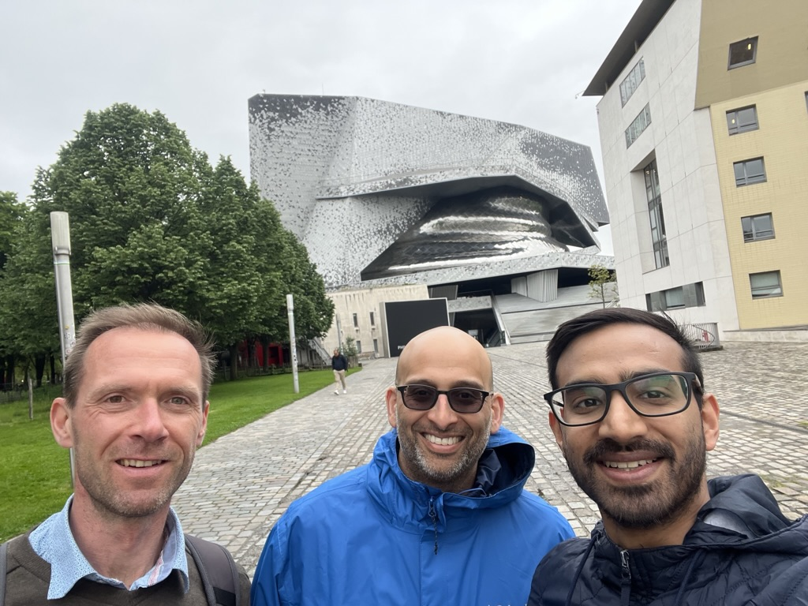

Write, document, test and distribute Python packages with Jupyter & Quarto
I attended JupyterCon 2023 in Paris last week. On Thursday, Hamel Husain, myself, and J. J. Allaire (as a teaching assistant) presented a two and a half hour tutorial on Writing, Documenting, Testing, and Distributing Python Packages with nbdev and Quarto.
I think it went well! The room was full and attendees engaged with great questions.

shot-scraper.Hamel opened by describing the roots of nbdev’s programming paradigm: a combination of literate programming (introduced by Donald Knuth) and exploratory programming (beautifully demonstrated by Bret Victor) made possible by Jupyter notebooks. He then took us through both basic and advanced usage of Quarto – the publishing platform that powers nbdev’s documentation generation.
I followed with a demonstration of how I do notebook-driven development by live coding the now classic nbdev example: a library for interacting with playing cards based on Chapter 18 of Allen B. Downey’s Think Python. I tried to focus on the thinking process and how it differs from more conventional programming paradigms, rather than focusing on the mechanics of how nbdev works since that is so readily available online.
My demonstration was largely based on the official written nbdev tutorial and best practices post. I also used the tutorial as an opportunity to refine these docs. The biggest refinement was that I now recommend JupyterLab instead of the classic notebook. There are two main reasons for this:
Lab has a growing extension ecosystem:
I can’t live without the wonderful
jupyterlab-quarto. It renders Quarto markdown including frontmatter, callouts, and fenced divs which greatly improves the authoring experience.There is interesting work being done on LLM-related extensions like
jupyter-aiwhich adds an LLM chat interface to the sidebar.
Lab 4.0.0 was released! It comes with significantly better performance among a ton of other improvements. Most notably for me is a built-in implementation of classic’s collapsible headings extension (including the keyboard shortcuts). However, it is worth noting that extensions will need to migrate to version 4 and I’m not sure what this process will look like!
You can also find an outline of the tutorial as well as the slides for Hamel’s opening section at the tutorial website: https://fastai.github.io/jupytercon-2023.
By the way, we wrote the tutorial site using Quarto too! Here is the underlying repo: https://github.com/fastai/jupytercon-2023.
The conference venue was beautiful! On the last day, David Brochart, Hamel Husain, and I took a walk around the Cité des sciences et de l’industrie and surrounding area, and David shared some of the fascinating history behind the city.
